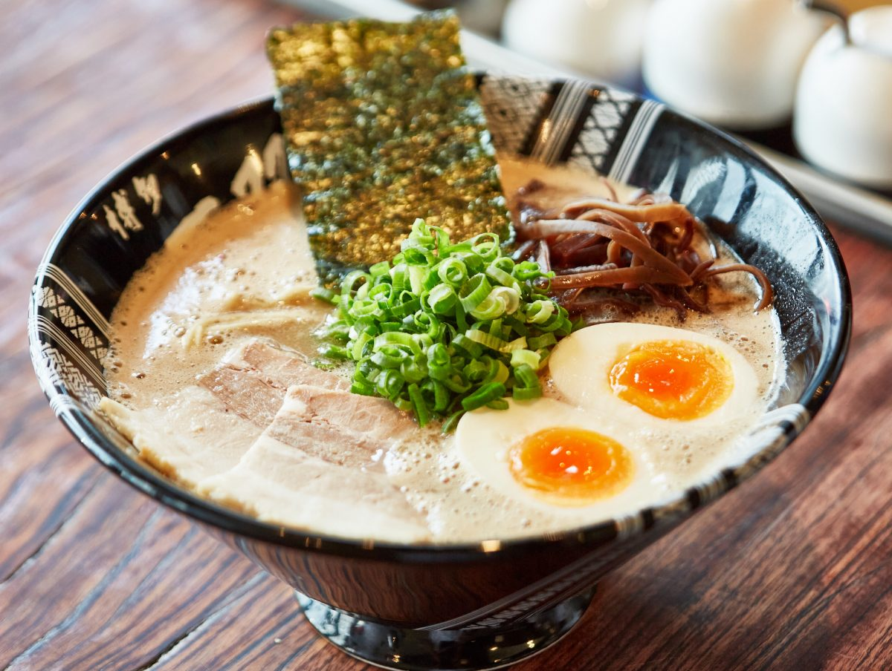
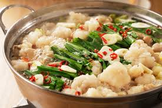
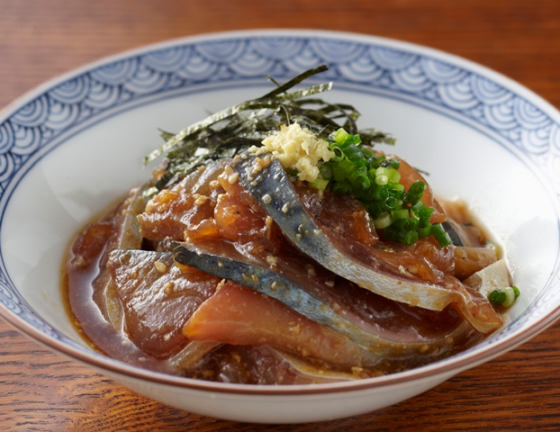

博多とんこつラーメン
日本各地で大人気のラーメン。福岡県内ならどこでも食べられます。詳しいお店はこちら！
博多明太子
お土産にぴったりなピリ辛めんたい！博多駅構内のおみあげ売り場で購入可能！
もつ鍋
ぷりぷりの新鮮なもつ鍋！飲み会にどうですか？
ごまさば
福岡の郷土料理で、新鮮なマサバの刺身を、醤油ベースのタレと胡麻で和えたもの。
日本各地で大人気のラーメン。福岡県内ならどこでも食べられます。詳しいお店はこちら！
お土産にぴったりなピリ辛めんたい！博多駅構内のおみあげ売り場で購入可能！
ぷりぷりの新鮮なもつ鍋！飲み会にどうですか？
福岡の郷土料理で、新鮮なマサバの刺身を、醤油ベースのタレと胡麻で和えたもの。